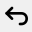
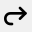
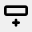
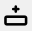
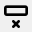
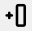
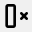

CSV++ - Uputstvo za upotrebu
Meni Fajl
- Novo (Ctrl+N) - Napravi novu praznu CSV datoteku
- Otvori (Ctrl+O) - Otvori postojeću CSV datoteku
- Sačuvaj (Ctrl+S) - Sačuvaj trenutnu datoteku
- Zatvori - Zatvori trenutnu datoteku
- Izlaz - Izađi iz aplikacije
Meni Podešavanja
- Kodiranje - Izaberi kodiranje datoteke (ANSI, UTF-8, UTF-16)
- Separator - Izaberi separator kolona (Zapeta, Tačka-zapeta, Tab, Ostalo)
- Jezik - Prebaci između engleskog i srpskog jezika
Dugmad na alatnoj traci
- Novo - stvaranje nove prazne tabele
- Otvori - Otvori postojeću CSV tabelu
- Sačuvaj - Sačuvaj trenutnu tabelu u CSV fajl
-   Poništi/Ponovi - Poništi ili ponovi poslednje akcije
-  Dodaj red ispod - Ubaci novi red ispod selektovane ćelije
-  Dodaj red iznad - Ubaci novi red iznad selektovane ćelije
-  Obriši red - Obriši selektovani red
-  Dodaj kolonu levo - Ubaci novu kolonu levo od selektovane ćelije
 Dodaj kolonu desno - Ubaci novu kolonu desno od selektovane ćelije
Dodaj kolonu desno - Ubaci novu kolonu desno od selektovane ćelije-  Obriši kolonu - Obriši selektovanu kolonu
- Veličina fonta - Promeni veličinu fonta tabele (8-24)
Kontekst meni (desni klik)
- Klikni desnim tasterom na bilo koju ćeliju za brzi pristup operacijama
- Sve operacije dodavanja i brisanja kolona/redova su dostupne iz kontekstnog menija
Uređivanje ćelija
- Klikni na ćeliju da je selektuješ
- Nakon selektovanja nije potrebno da pritisneš Enter ili sl, možete odmah početi sa unosom
- Da bi promenili naziv kolone, dvaput kliknite na naziv kolone i otvoriće se prozor za unos novog naziva
- Dodavanje novih redova i kolona zavisi od trenutno selektovane ćelije, isto tako i brisanje! Tako da uvek prvo selektujte ćeliju levim klikom pre nego što kliknete da dodate ili obrišete novi element
Statusna traka
- Prikazuje broj redova i kolona u vašoj tabeli
- Prikazuje trenutno kodiranje fajla i separator kolona
- Prikazuje koordinate trenutno izabrane ćelije u zagradi - [kolona,red]
Saveti
- Izbor jezika se automatski čuva u memoriji računara
- Širina kolone se može promeniti pomeranjem uspravne linije levo ili desno od naziva kolone
- Datoteke mogu biti otvorene prevlačenjem u prozor aplikacije
- Aplikacija pamti do 50 undo akcija